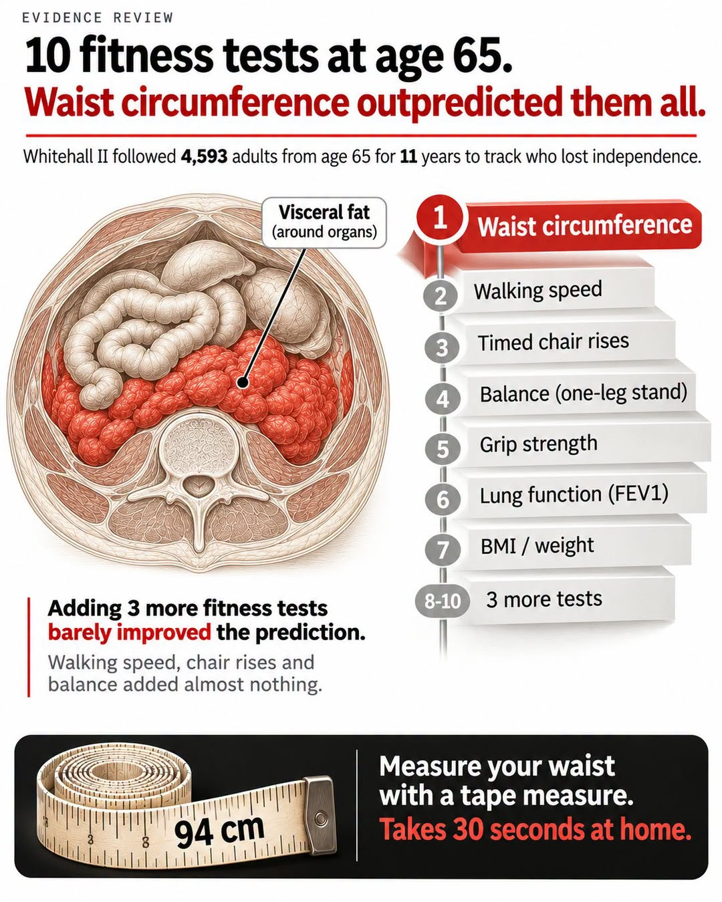

Visceral fat is the fat stored deep in the abdomen around the organs, beneath the abdominal muscles, as opposed to the subcutaneous fat you can pinch under the skin. Liver fat (fatty liver, now called metabolic dysfunction-associated steatotic liver disease, or MASLD) is fat that builds up inside liver cells. In the group's view the two are closely linked: visceral fat and liver fat travel together, and both are tied to insulin resistance, type 2 diabetes, high triglycerides and cardiovascular risk123.
Louis Nervegna, one of the group's admins, goes further and argues that excess liver fat is the main cause of insulin resistance in most people, and that losing it can reverse metabolic syndrome, fatty liver and diabetes45. Much of this summary therefore reflects his reading of the research, which the article attributes where relevant, alongside the trials and papers he and Gokhan Can shared.
The reassuring message is that this fat is among the first to go when you lose weight, and that many dietary and lifestyle approaches have lowered it in trials. The cautious message is that many of the individual findings come from small or short studies, and that the best head-to-head evidence is more mixed than the "any diet works" slogan suggests.
What visceral and liver fat are, and why they matter
Where the fat sits
Louis describes visceral fat as the abdominal fat stored in and around the liver and other organs, and says the amount of visceral fat you can see in the mirror is a simple marker of how much liver fat you have12. Fat can also build up in the pancreas, which he links to loss of insulin-producing beta-cell function11. "Ectopic" fat means fat stored where it does not belong, such as the liver, pancreas and muscle.
A Yale report Louis shared describes the sequence in young, lean, healthy people: ectopic fat first builds up in muscle, causing muscle insulin resistance, and then in some people in the liver, causing hepatic insulin resistance that can lead to type 2 diabetes, NASH and cirrhosis6.
How much liver fat is too much
Fatty liver is conventionally diagnosed when liver fat exceeds 5%8. The Yale researchers argue that figure is too high. In a study of 2,331 mostly young, lean, healthy people, liver fat above 1.85% was associated with insulin resistance and greater cardiovascular risk, and levels of 1.85% to 3% are common in lean people6. Louis's takeaway is that even a relatively thin person may have enough liver fat to cause insulin resistance, and he says Asians develop insulin resistance at lower levels of liver and visceral fat than Caucasians612.
This is why the group talks about "skinny fat": a normal weight on the outside with unhealthy internal fat or low muscle13. Louis advises people not to assume they have little visceral fat because their weight is normal, and suggests dieting combined with resistance training to replace the lost weight with muscle12.
The harms the group highlights
- Insulin resistance and diabetes. Louis calls insulin resistance a major risk factor for cardiovascular disease and says liver fat is its main cause1. In Roy Taylor's work, fat in the pancreas is linked to failing beta cells: in a Newcastle study of 18 obese people with type 2 diabetes, those with diabetes had abnormally high pancreatic fat and lost on average 1.2% of it after gastric bypass, after which insulin secretion normalized11.
- Triglycerides and HDL. Louis argues the TG/HDL ratio tracks visceral fat, especially liver and pancreas fat, so any diet that removes that fat should improve it. This is his opinion without a cited study314.
- LDL. He explains that insulin stimulates the liver to make cholesterol, so insulin-resistant people tend to have high LDL, and correcting insulin resistance by losing liver fat should lower LDL15.
- Inflammation. He argues that large hsCRP drops seen on carnivore, keto or vegan diets mostly reflect weight loss and cleared liver fat16.
- Metabolic syndrome and residual risk. A guide reshared by Gokhan lists the five components (blood pressure of 130/85 or higher, fasting glucose of 100 or more, low HDL, triglycerides of 150 or more, and a large waist) and describes metabolic syndrome as a contributor to the heart risk that remains after LDL is lowered14.
- Lp(a) and abdominal fat. In a MESA cohort analysis, people with Lp(a) of 50 mg/dL or more and a waist-to-hip ratio at or above the 90th percentile had a 2.34-fold higher ASCVD risk (95% CI 1.61 to 3.40), while in the lower two waist-to-hip tertiles Lp(a) was not significantly associated with risk. BMI did not modify the risk. Louis stresses this is a prospective cohort and cannot prove causality, but suggests visceral fat loss is important for people with high Lp(a)17.
- Aging and disability. In Whitehall II data on 4,593 adults followed about 11 years, waist size predicted future disability better than nine other measures, including BMI and grip strength18. In rats, surgically removing visceral fat extended lifespan, which Louis takes as a hint that part of calorie restriction's benefit is lost visceral fat19.

How to estimate your visceral and liver fat
- Waist minus thigh. Louis says subtracting thigh circumference from waist circumference is a better estimate of visceral fat than the number from a DEXA scan, and avoids radiation. The reasoning is that waist reflects total abdominal fat and thigh reflects subcutaneous fat. He points to the Luxembourg Institute of Health calculator2021.
- FibroScan. This specialized ultrasound (elastography) measures liver fat and stiffness. Louis calls it the best test for liver fat and reports his own liver fat is under 1%822.
- Not liver enzymes. Half of people with fatty liver have normal liver enzymes, and enzyme-based scores such as FIB-4 are poor predictors of liver fat8.
- Waist-to-height ratio, waist-to-hip ratio and TG/HDL are simple markers the group uses as proxies1417.
What causes fat to build up in the liver
Louis says the usual cause is storing too much visceral fat in response to excess calories, with refined starch and sugar-sweetened drinks raising the odds, though lean people can also be affected1. Several posts add detail:
- Overeating. In healthy young men, five days of 1,200 to 1,500 extra daily calories from refined carbohydrates, saturated fat and ultra-processed food increased liver fat with minimal weight gain23.
- Fruit and fructose. Louis quotes a post stating that adding about 500 g of fruit a day for two months did not raise MRI liver fat, with fructose harms seen mainly in extreme overfeeding studies with fructose-sweetened drinks24. He also notes high fructose causes fatty liver in animals yet whole fruit is linked to lower fatty liver risk in humans, and discusses a 2025 mouse study in which inulin fiber helped gut bacteria clear fructose before it reached the liver; no human trial has tested that mechanism25.
- Protein. A Cell Metabolism paper reports that in NHANES (4,693 participants), carbohydrate and total fat intake were not associated with MASLD, while medium or high protein intake was associated with about 1.45-fold higher MASLD risk and low carbohydrate intake with about 2-fold higher MASH progression. Amino acids were shown to fuel liver fat synthesis in the laboratory work26. This is cross-sectional data and sits uneasily with advice elsewhere in the group.
- Choline. Severely inadequate choline intake can make liver fat accumulate in controlled feeding studies and is reversible with adequate intake27.
- Too little exercise. Louis explains that sumo wrestlers eat huge amounts of refined carbohydrate yet store little fat in the liver, pancreas or abdomen, which he attributes to up to 7 hours of daily exercise releasing adiponectin that steers fat under the skin28.

Reducing the fat: what the evidence shows
Weight loss comes first
Louis's core message is that the first place fat comes off during calorie restriction is the liver, so weight loss, specifically visceral fat loss, is the most effective way to reduce liver fat929. A Yale trial he cites put people with type 2 diabetes on about 1,200 calories a day; after 8 to 12 weeks most lost about 10% of body weight, liver fat fell, and "the day they didn't have any more liver fat" blood sugars were normal and the diabetes was gone6.
Roy Taylor's trials
Louis summarizes Roy Taylor's randomized trials as follows: an 8-week liquid diet of about 700 kcal (with normal proportions of carbohydrate, fat and protein, plus unlimited non-starchy vegetables), average weight loss of 15 kg (33 lb), liver fat cleared in a couple of weeks and pancreas fat in about 8 weeks, then a Mediterranean-style diet for maintenance. Insulin sensitivity and beta-cell function returned to normal, and he says patients stayed in remission as long as visceral fat stayed low530. He also describes a full curative response in some patients, with pancreas regeneration on imaging3031. His rule of thumb is about 30 lb of loss for most people532.
He argues this means no specific diet is magic: carnivore and plant-based diets both reverse diabetes if the weight loss is large enough, and he highlights one person's account of A1C falling from 10.7 to 5.5 in four months by clearing liver and pancreas fat, which is an anecdote rather than a study3334. His "Twinkie diet" example, a professor who lost 27 pounds in 10 weeks on junk food at 1,800 kcal a day with LDL down 20%, HDL up 20% and triglycerides down 39%, is offered as illustration, not a recommendation3536.
Does the type of diet matter?
The group presents two views.
Most diets work. A one-year randomized trial described by Louis compared three isocaloric diets: low-carb (8% carbohydrate, 75% fat), and two "good carb" diets (45% carbohydrate), one with intact whole grains. All three cleared liver and visceral fat. The low-carb and intact-whole-grain diets did slightly better than the flour-based whole-grain diet10. A low-fat vegan diet trial reported lower liver fat even without calorie restriction, and Louis concludes any diet that reduces visceral fat will work, faster or slower37.
Keto may be faster. In a controlled-feeding trial by Petersen et al. (Cell Metabolism, 2026), 42 adults with obesity, prediabetes and fatty liver lost about 10% of body weight on a ketogenic, Mediterranean or very low-fat plant-forward diet. Liver fat fell 67% on keto versus 45% on the other two diets, and prediabetes resolved in about half the keto group versus 29% on Mediterranean and 7% on plant-forward7. Gokhan noted all diets improved muscle insulin sensitivity, but keto gave clearly larger liver benefits38. Louis calls it a small study and wonders whether a Mediterranean-style keto diet would do even better7. For long-term caution, he also points to a mouse study in which lifelong keto eventually produced high cholesterol, liver fat and impaired insulin secretion; mouse data cannot be assumed to apply to humans39.
Mediterranean-style patterns
- A UChicago Medicine dietitian recommends three cups of coffee and four tablespoons of olive oil a day with a Mediterranean diet; this is clinic guidance, not a trial40.
- The 18-month DIRECT-PLUS trial randomized 294 people with abdominal obesity or dyslipidemia. Fatty liver prevalence fell to 54.8% (healthy guidelines), 47.9% (Mediterranean) and 31.5% (green Mediterranean with walnuts, green tea and a Mankai shake). Despite similar weight loss in both Mediterranean groups, the green version lost nearly double the liver fat (-38.9% versus -19.6%)41.
- A Baylor College of Medicine guide summarized by Louis favors calorie reduction, 4 to 5 servings of non-starchy vegetables, intact whole grains, whole fruit, fish at least twice a week, unsaturated oils, and a daily 30-minute walk, while avoiding refined sugar, fruit juice, processed meat and trans fat29.
- A polyphenol-enriched Mediterranean diet was reported in a magazine to cut visceral fat about 75% in 90 days without weight change; the source is a magazine article42. A dietitian's one-year case of reversed fatty liver and stiffness is a single anecdote43.
Changes that helped without weight loss
Louis notes diet and lifestyle changes can reduce liver fat even without weight loss and can add to weight-loss effects9. Examples from small trials:
- Swapping saturated for unsaturated fat. In a 12-week trial of 110 people with NAFLD, replacing ghee with the same amount of rapeseed oil significantly reduced steatosis, with ALT down 14.4, triglycerides down 39.7 mg/dL and HOMA-IR down 0.9444546. A secondary analysis of a 12-week trial found larger liver fat loss with greater increases in plasma n-6 polyunsaturated fat, and less liver stiffness reduction with higher saturated fat47.
- Resistant starch. Replacing refined starch one-for-one with resistant starch halved liver fat in 4 months in a trial Louis highlighted. A small PCOS trial found the diabetes drug acarbose, which turns most starch into resistant starch, lowered liver fat while metformin and a low-calorie diet did not4849.
- Tomatoes. In 79 adults with MASLD and BMI of 30 or less, 200 g raw tomatoes plus 50 g sauce daily for 6 weeks reduced FibroScan liver fat (-35 versus -18 dB/m) with no difference in weight50.
- Resistance training. A 2011 Gut study found resistance exercise reduced liver fat independent of weight loss51.
- Fasting. Louis shares an interview with a clinician claiming extended supervised fasting preferentially mobilizes visceral fat, and a magazine report that fat loss in prolonged fasting shifts toward autophagy. Neither is a controlled trial5253.

Supplements and drugs
- Semaglutide. In the ESSENCE phase 3 trial in biopsy-proven MASH with fibrosis stage 2 to 3, weekly semaglutide 2.4 mg resolved inflammation in 63% versus 34% on placebo and improved fibrosis in 37% versus 22%; weight loss averaged 10.5% versus 2%. This was a 72-week interim analysis54.
- Aspirin. A preliminary 2024 JAMA randomized trial of 81 mg daily for 6 months reported about a 10% reduction in liver fat on MR spectroscopy; 42.5% of the aspirin group had a reduction of at least 30% versus 12.5% on placebo55.
- Curcumin. An 87-patient trial of 1,000 mg/day phytosomal curcumin for 8 weeks improved ultrasound steatosis in 75% versus 4.7% on placebo56.
- CBD and CBG reduced liver fat in obese mice; human relevance is unproven57.
Show data
| Treatment | Placebo | |
|---|---|---|
| Semaglutide 2.4 mg: MASH inflammation resolved (ESSENCE) | 63% | 34% |
| Semaglutide 2.4 mg: fibrosis improved (ESSENCE) | 37% | 22% |
| Aspirin 81 mg, 6 months: liver fat down at least 30% | 42.5% | 12.5% |
| Curcumin 1,000 mg, 8 weeks: ultrasound steatosis improved | 75% | 4.7% |
Practical points from the group
These are the group's views and trial findings, not personal medical advice; the admins suggest discussing any plan with your doctor.
- Treat visceral fat loss as the main goal. Louis's rule of thumb is about 30 lb for most people, using a diet you can sustain, with drugs such as GLP-1 agonists if necessary59.
- Consider measuring rather than guessing: a tape-measure waist-minus-thigh estimate, and a FibroScan if liver fat is a concern, since liver enzymes can be normal820.
- Whole fruit and intact whole grains did not impair liver fat loss in the trials the group cites1024, whereas refined starch, sugary drinks and sustained overeating are linked to more liver fat123.
- Add movement: resistance training lowered liver fat in one trial and a daily 30-minute walk is part of the Baylor guide2951.
- If you have high Lp(a), Louis argues losing visceral fat matters, while noting the supporting data are observational17.
Frequently asked questions
Can a normal-weight person have a fatty liver?
Yes. Lean people can carry liver fat above 1.85%, enough to be linked with insulin resistance613.
Do normal liver enzymes rule out fatty liver?
No. Half of people with fatty liver have normal enzymes8.
Is fruit bad for the liver?
The group's posts say normal amounts of whole fruit did not raise liver fat in trials, whereas fructose-sweetened drinks in overfeeding studies did2425.
Is the best diet low-carb?
Not necessarily. A one-year trial found low-carb and intact-whole-grain diets worked similarly10, while a small 2026 trial found keto reduced liver fat more at matched weight loss7.
Is fatty liver reversible?
Louis says yes and cites trials of weight loss, Mediterranean diets and other approaches that cleared liver fat441.